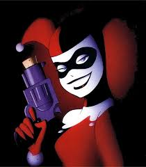
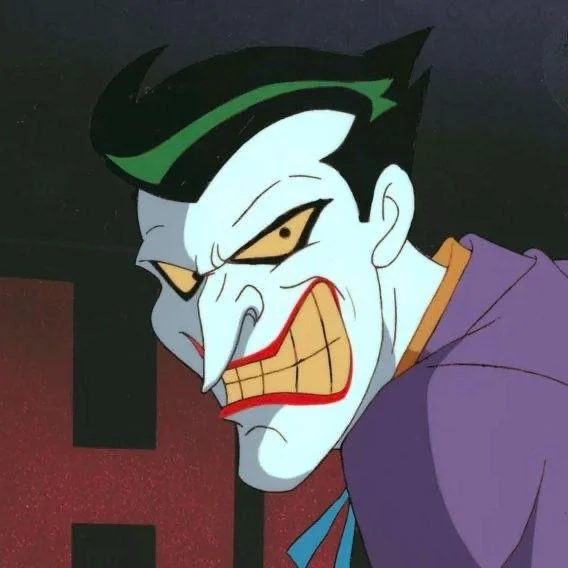

This is a start of a new week, and I am ready to learn more about IMD. I hope to gain more knowledge and skills that will help me in my future career. I am excited to see what this week has in store for me and I am looking forward to the challenges and opportunities that will come my way. Let's make this week a productive and successful one!
Focusing on IMD links and images
Batman The Animated Series


Two images of harley and joker from the show batman the animated series, these are colorful and vibrant images that capture the essence of the characters. The first image features Harley Quinn, a popular character known for her playful and mischievous personality. The second image features the Joker, a notorious villain known for his chaotic and unpredictable nature. Both images are visually striking and showcase the unique art style of the show.